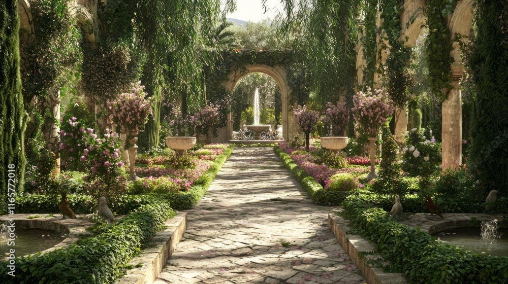

Byzantine Garden Design
The Byzantine period was between the 13th and 15th centuries which is mainly known for the mosaic art, and the decline of Constantinople in 1453. The mosaics represented the melange of the Christian, Hellenistic, Roman, and Oriental traditions.

Byzantine Garden Design — The Gardens of the Eastern Roman Empire
Byzantine garden design developed within the Byzantine Empire, also known as the Eastern Roman Empire, which endured from the foundation of Constantinople in 330 CE until the city's fall to the Ottoman Turks in 1453. Although the empire reached its greatest influence during the early and middle Byzantine periods, its artistic and architectural traditions continued throughout its final centuries. Byzantine gardens inherited many principles from ancient Greek and Roman landscape design while incorporating influences from Christian symbolism, Persian and Near Eastern horticulture, and the rich artistic traditions of the eastern Mediterranean. The Byzantine period is particularly celebrated for its extraordinary mosaics, religious architecture, decorative stonework, and elaborate use of gold, colour, and symbolism. These artistic traditions influenced the way nature was represented in architecture and decorative arts, creating a distinctive visual language in which flowers, trees, birds, fruit, water, and gardens carried spiritual as well as aesthetic meaning. Unlike the grand geometric landscapes of ancient Rome, surviving evidence of Byzantine gardens is comparatively limited. Nevertheless, historical accounts, architectural remains, mosaics, and written descriptions reveal a tradition of enclosed courtyards, palace gardens, monastery gardens, orchards, fountains, and cultivated retreats. The Byzantine garden was a place where the physical and spiritual worlds could meet—a cultivated sanctuary representing beauty, abundance, paradise, and divine creation.
Historical Background and Cultural Influences
The Byzantine Empire preserved much of the intellectual and artistic inheritance of classical Greece and Rome. Its gardens continued the Roman traditions of courtyards, colonnades, fountains, orchards, and ornamental planting. However, Byzantine culture introduced a stronger Christian interpretation of the landscape. The garden increasingly became associated with the biblical Garden of Eden, spiritual renewal, purity, and the promise of paradise.
Three major cultural influences shaped Byzantine garden traditions:
- Greek and Hellenistic: Geometry, proportion, philosophical contemplation, sculpture, and the appreciation of cultivated nature.
- Roman: Courtyard gardens, peristyles, fountains, water engineering, ornamental planting, and architectural integration.
- Persian and Oriental: Enclosed pleasure gardens, fruit orchards, flowing water, shade, fragrant plants, and the concept of an earthly paradise.
Christianity brought these traditions together through religious symbolism, transforming the garden into a setting that could represent both earthly beauty and the perfection of heaven.
The Garden as an Earthly Paradise
The concept of paradise was particularly important in Byzantine thought. The biblical Garden of Eden provided an enduring model of an ideal landscape: a place of abundance, harmony, flowing water, fruit-bearing trees, and divine creation. Byzantine gardens could therefore be understood as small representations of paradise, protected from the disorder of the outside world. Enclosure was an important feature. Walls, colonnades, and architectural boundaries created intimate spaces in which trees, flowering plants, fountains, and pathways could be carefully arranged.
These gardens were intended to provide:
- Spiritual contemplation and prayer.
- Privacy and retreat from urban life.
- Shade and protection from the Mediterranean sun.
- Fruit, herbs, flowers, and useful plants.
- Beauty and fragrance.
- Places for conversation and recreation.
The enclosed garden became a symbol of order, purity, protection, and the beauty of God's creation.
Palace Gardens and Imperial Landscapes
The imperial gardens of Constantinople were among the most prestigious landscapes of the Byzantine world. Palaces were surrounded by courtyards, planted spaces, orchards, and pleasure gardens that provided settings for imperial ceremonies, recreation, and private relaxation. The gardens of the Great Palace of Constantinople, in particular, formed part of an extensive architectural complex overlooking the Sea of Marmara. These landscapes combined elements inherited from Roman palace gardens with the Byzantine appreciation for elaborate architecture and controlled natural environments.
Architectural Layout and Enclosure
Byzantine gardens frequently incorporated the architectural principles of the classical courtyard garden. Walls, colonnades, covered walkways, and porticoes created enclosed outdoor rooms. These spaces provided protection from the sun and established a transition between interior architecture and the garden.
The design could include:
- Rectangular courtyards.
- Colonnaded walkways.
- Central fountains and water basins.
- Symmetrical planting arrangements.
- Fruit trees and ornamental groves.
- Stone pathways and mosaic surfaces.
- Shaded seating areas.
- Decorative sculptures and architectural ornaments.
The garden was often designed to be experienced from within the surrounding architecture. Windows, doorways, and colonnades framed views of greenery, creating a visual relationship between indoor and outdoor spaces.
Water and Fountains
Water remained an essential component of Byzantine garden design. Drawing upon Roman engineering traditions, Byzantine cities maintained sophisticated water-supply systems, reservoirs, cisterns, and aqueducts. These systems supported urban life as well as the gardens of imperial and wealthy households.
Fountains and pools served several purposes:
- Providing cooling and refreshment.
- Creating soothing sounds.
- Reflecting surrounding architecture.
- Supporting ornamental aquatic planting.
- Establishing central focal points.
- Symbolizing life, purity, and spiritual renewal.
Water was especially significant in the Christian interpretation of paradise. Biblical imagery frequently associated flowing water with spiritual life and divine abundance. The combination of fountains, flowering plants, trees, and enclosed courtyards created a landscape that represented an earthly version of heavenly paradise.
The Imperial Pleasure Garden
The Byzantine emperor's garden was also a setting for entertainment and imperial display. Palace landscapes could include planted groves, orchards, shaded walks, and larger recreational parks. Historical accounts describe Byzantine emperors maintaining gardens and parks, sometimes incorporating animals and hunting grounds. These landscapes demonstrated the resources available to the imperial household and continued the Roman tradition of presenting the ruler as the master of an ordered natural world.
Monastery and Religious Gardens
Religious communities played an important role in the development and preservation of Byzantine horticultural traditions. Monasteries maintained gardens for practical, medicinal, and spiritual purposes. Unlike the elaborate pleasure gardens of imperial households, monastic gardens were generally more closely connected with daily religious life and self-sufficiency.
The monastery garden could provide:
- Vegetables and fruit for communal meals.
- Medicinal herbs for treating illnesses.
- Flowers for religious ceremonies.
- Fragrant plants for devotional use.
- Shade and quiet spaces for contemplation.
- Orchards and vineyards for productive cultivation.
The enclosed monastery courtyard provided a protected environment for cultivation and reflection. The relationship between gardening and spirituality was particularly important. Caring for plants could be understood as an expression of stewardship over God's creation. The garden became a place of discipline, patience, prayer, and renewal.
The Enclosed Garden
An important Christian garden concept was the hortus conclusus, Latin for enclosed garden. Although the tradition predates the Byzantine Empire and became especially influential in later medieval European art, it was closely connected with Christian interpretations of purity, sacredness, and the Garden of Eden. The enclosed garden was often associated with the Virgin Mary and symbolic representations of divine purity.
Its visual characteristics included:
- Protective stone walls.
- Flowering plants.
- Fruit-bearing trees.
- Roses and lilies.
- Enclosed courtyards.
- Water features.
- Quiet spaces for prayer and contemplation.
This tradition would later become particularly influential in medieval monastery gardens and European religious landscapes.
Byzantine Mosaic Art and Garden Imagery
One of the most distinctive characteristics of Byzantine culture was its extraordinary development of mosaic art. Mosaics were created using small pieces of coloured stone, marble, glass, and gold-backed tesserae. These were assembled into intricate compositions that decorated church interiors, floors, walls, domes, and important architectural surfaces. The imagery reflected a fusion of Christian, Hellenistic, Roman, and Eastern artistic traditions. Nature was an especially important subject. Trees, flowering vines, pomegranates, palm leaves, birds, peacocks, fountains, and ornamental patterns were frequently incorporated into mosaic compositions. These natural elements were not necessarily literal depictions of gardens. Instead, they could communicate symbolic ideas about creation, fertility, renewal, and paradise.
The Symbolism of Flowers and Trees
Byzantine artists frequently used botanical imagery to express religious ideas. Different plants and natural elements could carry particular symbolic associations: Roses: Beauty, love, and spiritual perfection. Lilies: Purity and holiness, particularly in later Christian symbolism. Vines and Grapes: Christ, spiritual nourishment, and the Eucharist. Pomegranates: Abundance, fertility, and the unity of the faithful. Palm Trees: Victory, eternal life, and spiritual triumph. Olive Trees: Peace, renewal, and divine blessing. Peacocks: Immortality, renewal, and the splendour of paradise. The use of botanical imagery allowed artists to create a symbolic garden that transcended the physical landscape.
Birds and the Garden of Paradise
Birds were frequently represented among trees and flowers. Peacocks were especially popular because of their magnificent plumage and their association with immortality and paradise. Doves, songbirds, and other birds could also appear within decorative compositions. One particularly interesting example is the mosaic Mosaic with a Peacock and Flowers in the collection of the Metropolitan Museum of Art, dated to the 3rd–4th century and identified as Roman or Byzantine. It illustrates the continuity of garden imagery between late Roman and Byzantine artistic traditions.
The Garden as a Spiritual Image
Byzantine religious art frequently represented paradise as an abundant garden. Rather than depicting an ordinary earthly landscape, artists created idealized environments filled with flowering vegetation, fruit trees, birds, and flowing water. Gold backgrounds and carefully arranged patterns gave these scenes a heavenly quality. The garden became a visual metaphor for the perfection of divine creation. This symbolism was especially significant in church architecture, where decorative gardens could surround sacred imagery and reinforce the idea of the church as a representation of the heavenly kingdom.
Byzantine Garden Planting
Byzantine gardens incorporated a variety of Mediterranean plants, combining ornamental beauty with practical cultivation. Fruit trees, flowering shrubs, aromatic herbs, and evergreen trees were important components. The selection of plants reflected regional climate, availability, religious symbolism, and the intended function of the garden.
Trees
- Olive: An important Mediterranean tree associated with peace, prosperity, and longevity.
- Cypress: A tall evergreen used to provide vertical structure and architectural emphasis.
- Fig: A productive fruit tree valued for its shade and edible fruit.
- Pomegranate: An ornamental and productive tree associated with abundance.
- Date Palm: An architectural tree associated with the eastern Mediterranean and Near East.
- Laurel: An aromatic evergreen used for its foliage and symbolic associations.
- Plane Tree: Valued for its broad canopy and cooling shade.
- Mulberry: A productive tree cultivated for its fruit.
Flowers
- Roses
- Lilies
- Violets
- Irises
- Narcissus
- Crocus
- Poppies
- Anemones
- Hyacinths
Flowers were important for their colour, fragrance, decorative value, and religious associations.
Aromatic and Medicinal Gardens
- Rosemary
- Lavender
- Thyme
- Sage
- Oregano
- Mint
- Fennel
- Dill
- Coriander
- Parsley
Herbs were cultivated for cooking, medicinal preparations, household use, and their fragrance.
Vines and Climbing Plants
Grapevines were particularly important in Byzantine culture, both economically and religiously. They could be trained over pergolas, trellises, and shaded walkways, creating comfortable outdoor spaces. Ivy and other climbing plants could also be used to soften walls and architectural structures.
The Influence of Byzantine Garden Design on Later European Gardens
The Byzantine garden tradition had a lasting influence on the gardens of the Mediterranean and medieval Europe. Following the fall of Constantinople in 1453, Byzantine scholars, artisans, and cultural traditions continued to influence the wider European world. The enclosed courtyard, monastery garden, ornamental fountain, fruit orchard, and symbolic garden remained important features of medieval and Renaissance landscapes. Byzantine garden culture also influenced the wider eastern Mediterranean and the Ottoman world. Many traditions of enclosed gardens, water features, fruit cultivation, and ornamental planting continued to evolve in Constantinople and surrounding regions.
The Byzantine garden therefore represents an important transition between the formal gardens of antiquity and the elaborate religious and ornamental gardens of the medieval period.
Key Principles of Byzantine Garden Design
Enclosure and Protection
Use walls, colonnades, and architectural boundaries to create private garden sanctuaries.
Christian Symbolism
Incorporate plants and decorative elements associated with paradise, purity, renewal, and divine creation.
Water Features
Introduce fountains, pools, and reflecting basins as central elements.
Courtyard Gardens
Create intimate outdoor rooms surrounded by architecture.
Mosaic and Decorative Art
Use colourful mosaic patterns, stonework, and ornamental surfaces to complement the landscape.
Fruit Trees and Orchards
Combine ornamental beauty with productive planting.
Fragrance
Incorporate roses, lilies, lavender, rosemary, and other aromatic plants.
Evergreen Structure
Use cypress, laurel, and other evergreen trees to establish year-round structure.
Spiritual Contemplation
Provide quiet spaces for prayer, meditation, and reflection.
Architectural Masterpeices
Combine columns, arches, covered walkways, fountains, and planting into a unified composition.
Paradise Garden
Create a protected landscape representing abundance, beauty, and the perfection of nature.
Garden as Art
Treat the garden as an artistic composition in which architecture, plants, water, and symbolism work together.Byzantine Garden Design Today
A modern Byzantine-inspired garden can be developed through the combination of Mediterranean planting, enclosed architecture, decorative surfaces, and symbolic water features. For an Okanagan interpretation, I would suggest creating a formal courtyard with pale limestone or textured stucco walls, rounded arches, a central stone fountain, and a mosaic pathway. Olive trees in protected locations, columnar junipers, cypress-like evergreens, pomegranates, figs, roses, lavender, rosemary, and irises would provide an appropriate planting palette, with species selected for local winter hardiness.
Suggested Features
- Central Fountain: A stone fountain or shallow reflecting basin as the focal point.
- Mosaic Walkways: Decorative geometric patterns using blue, gold, terracotta, and ivory.
- Enclosed Courtyard: Stucco or stone walls with arched entrances.
- Evergreen Trees: Columnar junipers and other upright evergreens.
- Flowering Borders: Roses, lilies, irises, and violets.
- Herb Garden: Rosemary, lavender, sage, and thyme.
- Fruit Trees: Fig, pomegranate, and suitable Mediterranean fruit varieties.
- Covered Walkway: A shaded colonnade or vine-covered pergola.
- Decorative Art: Mosaic panels depicting birds, vines, flowers, and peacocks.
The colour palette could draw inspiration from traditional Byzantine mosaics: deep sapphire blue, turquoise, emerald green, antique gold, ivory, and warm terracotta.
The Legacy of Byzantine Garden Design
The Byzantine garden represents a remarkable blending of classical landscape traditions and Christian artistic expression. Where the Roman garden emphasized architecture, geometry, water, sculpture, and theatrical presentation, the Byzantine garden inherited these principles and gave them an increasingly spiritual dimension. The garden became a representation of paradise: an enclosed world of fruit trees, fragrant flowers, flowing water, birds, and carefully cultivated vegetation. Its greatest contribution to garden history was the relationship between landscape, architecture, art, and spirituality. The enduring Byzantine aesthetic can be summarized as: A garden of enclosure, reflection, symbolism, and abundance—where mosaic art meets nature, fountains provide tranquility, flowering plants represent divine beauty, and architecture creates a sanctuary reminiscent of the Garden of Eden. Historical note for your garden-design collection: The Byzantine Empire began in 330 CE and ended in 1453, rather than beginning in the 13th century. The 13th–15th centuries represent its late Byzantine period. Its gardens also continued many Roman traditions, so it is more accurate to describe Byzantine garden design as an evolution of Roman, Hellenistic, Christian, and Eastern Mediterranean influences rather than an entirely separate style.